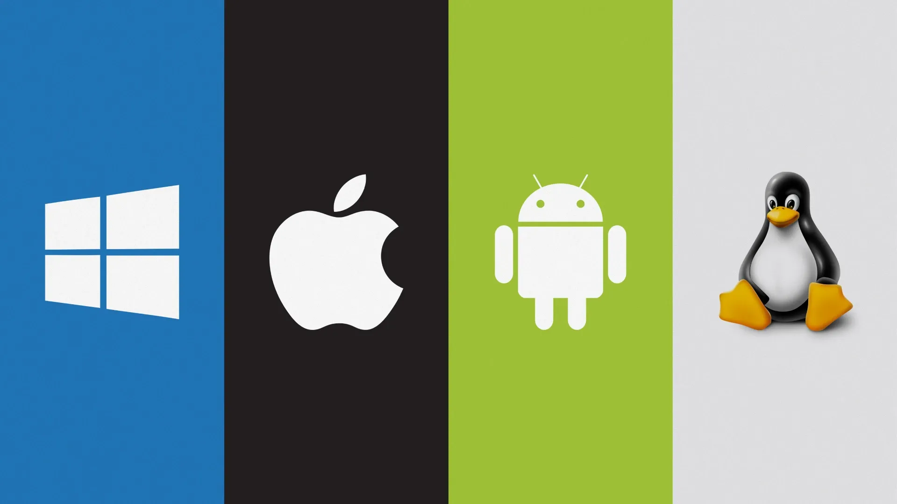

O que é software?
conjunto de componentes lógicos de um computador ou sistema de processamento de dados; programa, rotina ou conjunto de instruções que controlam o funcionamento de um computador; suporte lógico.
Chorme, cauculadora, Windows
o que é sistemas operacionais?
é um software, ou um conjunto de softwares, que tem como papel gerenciar e administrar todos os recursos presentes em um sistema.
Linux, Windows, Android, macOS, UNIX.
o que um software de progamação?
Softwares de programação são softwares que permitem que programadores criem outros programas, através do uso de linguagens de programação. Eles fornecem ferramentas e soluções para testar, compartilhar, gerenciar e até de facilitar a escrita dos códigos.
Word, Exel, Paint, Bloco de notas, calculadora.

o que é software de sistemas?
O que é o software em um sistema? Resultado de imagem para O que é software de sistemas O software de sistema é um conjunto de informações processadas pelo sistema interno de um dispositivo que permite a interação entre usuário e o hardware.
Windows, Android, iOS.
o que e software de aplicação?
Software de aplicativos são os programas utilizados nos dispositivos que permitem ao usuário executar uma série de tarefas nas mais diversas áreas de atividade.
Chrome, calculadora, Windows Media Player, Microsoft Word, AutoCAD, Adobe Photoshop.
o que é software livre?
Alguns mitos precisam ser desvendados quando falamos em Software Livre. Segundo a Free Software Foundation (Fundação para o Software Livre), é considerado livre qualquer programa que pode ser copiado, usado, modificado e redistribuído de acordo com as necessidades de cada usuário.
Exemplos de Software Livre Linux (sistema operacional GNU/Linux); The GIMP (editor de imagens); eMule e outros compartilhadores; Mozilla Firefox (navegador web) e outros.
o que é um software web ou web app?
O que é Web App? Se você acompanha notícias sobre tecnologia, com certeza já ouviu falar do termo 'Web App' por aí. Essa categoria é nada mais do que um site responsivo, que se comporta como um aplicativo. Ele pode ser acessado de qualquer tipo de navegador e funciona nos mais diversos tamanhos de tela.
Exemplos de web apps Twitter. Apesar de poder encontrar o app do twitter nas lojas de aplicativos, a rede social pode ser facilmente acessada pelo navegador do seu dispositivo. ... Pinterest. O Pinterest é uma rede social de compartilhamento de imagens. ... YouTube. ... Uber.
o que é software de inteligencia artificial?
Os softwares de inteligência artificial, ou software IA, imitam o comportamento humano e os padrões de aprendizado.
assistentes de voz como Alexa e Siri, algoritmos de redes sociais, ferramentas de reconhecimento facial como Face ID, entre outros.
Windows 1.0 (1985)
A primeira versão do SO foi lançada no longínquo ano de 1985 e era mais uma extensão do MS-DOS do que um software completo. Ele se caracterizava pelo modelo colorido na tela e aplicações como bloco de notas e até um Paint. Ele não permitia a sobreposição de janelas, por exemplo, e por isso todas elas ficavam expostas lado a lado.

Windows 2.0 (1987)
O Windows 2.0 chegou ao mercado em dezembro de 1987 e, tanto como o seu predecessor quanto o seu sucessor, usava uma estrutura de computação em 16 bits. Ele apresentou melhorias na interface, como a possibilidade de sobrepor janelas de programas, atalhos de teclado e suporte a VGA.

Windows 3.0 (1990)
Sucessor do Windows 2.0, que trouxe poucas alterações em relação ao primeiro, o 3.0 foi lançado em 1990 com melhorias de memória. Ele também se destacou pelo visual mais limpo, melhor organização de arquivos e apresentou ao mundo o Campo Minado, que viria a ser um destaque nos computadores pré-internet.

Windows 95 (1995)
Considerado um dos sistemas operacionais mais importantes da história, o Windows 95 abriu uma nova era para a Microsoft. Ele foi programado em 32 bits e trouxe melhorias que incluíam o sistema plug and play, recursos de acessibilidade e o navegador Internet Explorer. Lançado em agosto de 1995, o sistema foi o primeiro com o menu Iniciar, que permanece até hoje, e foi o responsável por ajudar o computador a se tornar um item popular nas casas das famílias do mundo todo.

Windows 98 (1998)
O Windows 98 aprofundou a revolução que o seu antecessor começou. Disponibilizado em junho de 1998, ele era mais estável, tinha suporte a mais de um monitor e componentes USB, particionamento do HD, serviço Outlook de e-mail, modo de hibernação e mais. No mundo todo, ele foi o primeiro contato de muita gente com o PC, já que ainda estava em muitas máquinas mesmo após a virada do século. Lançado em agosto de 1995, o sistema foi o primeiro com o menu Iniciar, que permanece até hoje, e foi o responsável por ajudar o computador a se tornar um item popular nas casas das famílias do mundo todo.

Windows 2000 (2000)
O Windows 2000 foi lançado em fevereiro de 2000 e consolidou o fim definitivo da nomenclatura "NT". O Windows NT, que começou a ser disponibilizado em 1993, era voltado para usuários corporativos, servidores e workstation, e não para o público geral. Por causa disso, sua menção é importante, além de ter trazido recursos importantes e novos sistemas de segurança. Lançado em agosto de 1995, o sistema foi o primeiro com o menu Iniciar, que permanece até hoje, e foi o responsável por ajudar o computador a se tornar um item popular nas casas das famílias do mundo todo.

Windows XP (2001)
O Windows XP foi lançado em outubro de 2001 e à época era bastante inovador, principalmente no quesito visual. Ele apostou em um menu Iniciar verde e barras azuis que se tornaram bastante populares entre os usuários. Entre as várias novidades que ele apresentou em suas versões, havia a opção de alternância de contas de usuários sem fechar arquivos abertos, suporte para DSL e wireless. Ele popularizou programas do Windows Media Player, já que CDs poderiam ser lidos pelos drives e tocados no programa. Seu wallpaper, uma fotografia de planícies na Califórnia, tornou-se uma das imagens mais famosas da era da internet. Lançado em agosto de 1995, o sistema foi o primeiro com o menu Iniciar, que permanece até hoje, e foi o responsável por ajudar o computador a se tornar um item popular nas casas das famílias do mundo todo.
Windows Vista (2006)
O Windows Vista teve um hiato bastante grande em relação ao anterior, se desconsiderarmos as atualizações e novas versões do XP. Ele foi lançado em novembro de 2006, apresentando uma nova estética de janelas transparentes e melhores recursos de segurança. Apesar disso, ele não foi tão bem recepcionado porque muitos usuários reclamavam que ele deixava o computador lento, o que fez muita gente continuar usando o XP por mais um bom tempo.
O Windows XP foi lançado em outubro de 2001 e à época era bastante inovador, principalmente no quesito visual. Ele apostou em um menu Iniciar verde e barras azuis que se tornaram bastante populares entre os usuários. Entre as várias novidades que ele apresentou em suas versões, havia a opção de alternância de contas de usuários sem fechar arquivos abertos, suporte para DSL e wireless. Ele popularizou programas do Windows Media Player, já que CDs poderiam ser lidos pelos drives e tocados no programa. Seu wallpaper, uma fotografia de planícies na Califórnia, tornou-se uma das imagens mais famosas da era da internet. Lançado em agosto de 1995, o sistema foi o primeiro com o menu Iniciar, que permanece até hoje, e foi o responsável por ajudar o computador a se tornar um item popular nas casas das famílias do mundo todo.